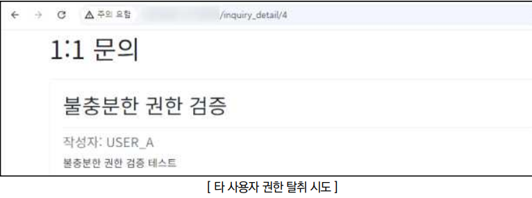
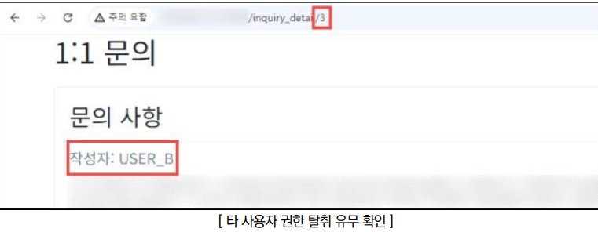

점검 목적
- 타 사용자의 권한을 탈취하여 민감한 데이터 접근 및 수정 가능 여부 점검
- 사용자 검증 로직을 서버 사이드에서 구현하여 비인가자로부터 악의적인 접근을 차단하기 위함
참고
- 웹 소스코드 참고
판단 기준
양호 : 중요 페이지에 사용자 검증 로직이 구현되어 있어, 타 사용자의 권한 탈취가 제한된 경우
취약 : 중요 페이지에 사용자 검증 로직이 미흡하여, 타 사용자의 권한 탈취가 가능한 경우
조치 방법
- 접근 제어가 필요한 모든 페이지에 서버 사이드 방식 사용자 권한 검증 로직 구현
점검 방법
Step 1) 타 사용자 접근이 제한된 페이지(비밀 게시글, 개인정보 변경 등)에서 사용되는 URL 구조와 파라미터를 분석하여 사용자 간 구분을 ID, 숫자, 일련번호 등 단순한 값의 사용 여부 확인

Step 2) 식별된 URL 구조와 파라미터를 변조하여 타 사용자의 비공개 정보나 권한 외 리소스에 대한 접근 가능 여부 확인

조치 방법
1. 세션을 이용한 사용자 검증 로직을 서버 측에 구현하여, 인가된 사용자만 중요 페이지에 접근할 수 있도록 구현
2. 각 페이지의 접근 권한을 정의하는 권한 매트릭스를 작성하고, 모든 페이지에 대해 해당 매트릭스를 참조하여 서버 사이드에서 권한 체크를 일관되게 수행